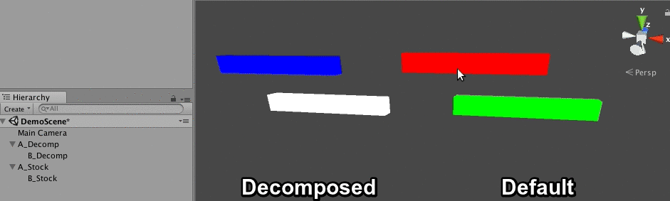

Matrix Decomposition
In my last blog we discussed transformation hierarchies. A transform having a non uniformly scaled parent lead to some strage side effects. Nameley, rotating such a transform would cause it to skew instead of rotating.
The only way to fix this non uniform scale issue is trough matrix decompositon. The idea is that you take the final matrix with the skewing problem and decompose it into position, rotation, scale and skew components. Once you have all these components, ignore the skew and create a new matrix using only positon, rotation and scale.
This type of decomposition is explained in detail in Shoemake and Duff's Matrix Animation and Polar Decomposition paper, as well as Shoemake's chapter on Polar Matrix Decomposition in Graphics Gems IV.
This blog post attempts to re-implementation shoemakes method, with code & math that's hopefully easier to read and understand. Shoemakes code for affine decomposition is on github. Looking at the code, the part of the interface that is interesting for us is this:
typedef struct {
HVect t; /* Translation components */
Quat q; /* Essential rotation */
Quat u; /* Stretch rotation */
HVect k; /* Stretch factors */
float f; /* Sign of determinant */
} AffineParts;
void decomp_affine(HMatrix A, AffineParts *parts);
We can call decomp_affine to find the translation (t), rotation (q) and scale (k) of the transform without shearing. These values can be used to build a new Transform that can then be converted to a Matrix. The code below uses the provided decomp_affine function to do build a correct transform:
Matrix GetWorldMatrix(Transform transform) {
Matrix localMatrix = ToMatrix(transform);
Matrix worldMatrix = localMatrix;
if (transform.parent != NULL) {
Matrix parentMatrix = GetWorldMatrix(transform.parent);
worldMatrix = localMatrix * parentMatrix;
if (ContainsNonUniformScale(transform.parent)) {
AffineParts decomp = decomp_affine(worldMatrix, &decomp);
Transform temp;
temp.parent = NULL;
temp.position = decomp.t;
temp.scale = decomp.k;
temp.rotation = decomp.q;
worldMatrix = ToMatrix(temp);
}
}
return worldMatrix;
}
Using the above code, we can fix the skew artifact, making orientations work as expected:
If the shearing issue is solved by an affine matrix decomposition, why isn't this technique standard in game engines? To put it simply, polar decomposition is an expensive operation, even if only performed on a few transforms. The technique is much better suited for offline tools.